찬란한 문화와 세계를 누빈 사람들,
그리고 천년 왕국의 흥망성쇠
우리 가족과 함께 떠나는 시간여행 두 번째 이야기
앞서 우리는 고구려, 백제, 신라, 가야의 이야기를 살펴보았어요. 하지만 아직 들려주지 못한 재미있고 감동적인 이야기들이 남아 있답니다. 통일신라 이야기를 시작하기 전에, 먼저 이 이야기들을 만나볼까요?
고구려의 평원왕에게는 평강이라는 공주가 있었어요. 어린 시절 잘 울던 평강에게 아버지 왕은 늘 이렇게 놀렸답니다.
"이 울보야! 계속 울면 바보 온달에게 시집보낼 거다!"
온달은 평양성 밖에 사는 가난하고 순박한 청년이었어요. 사람들은 그를 '바보 온달'이라 불렀지만, 사실은 마음이 따뜻하고 효심이 깊은 사람이었답니다.
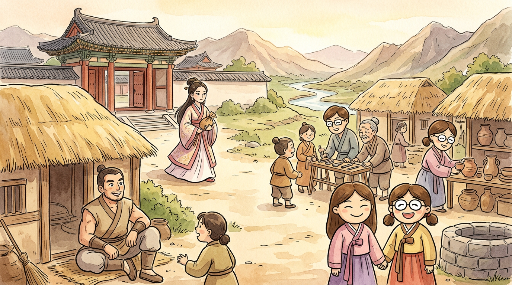
궁을 나서 온달을 찾아가는 평강공주
평강공주가 16살이 되자, 왕은 귀족 집안의 남자와 혼인시키려 했어요. 그런데 놀랍게도 공주는 이렇게 말했습니다.
"아버지께서 저를 온달에게 보내신다고 하셨잖아요. 왕의 말씀은 거짓이 될 수 없습니다!"
공주는 금팔찌를 들고 궁을 나와 정말로 온달을 찾아갔어요. 처음에 온달의 어머니는 "공주님이 올 곳이 아니다"라며 만류했지만, 공주의 진심에 감동했답니다.
평강공주는 금팔찌를 팔아 말을 사고, 온달에게 글공부와 무예를 가르쳤어요. 온달은 열심히 노력하여 뛰어난 무사로 성장했고, 전쟁에서 큰 공을 세워 대장군이 되었답니다!
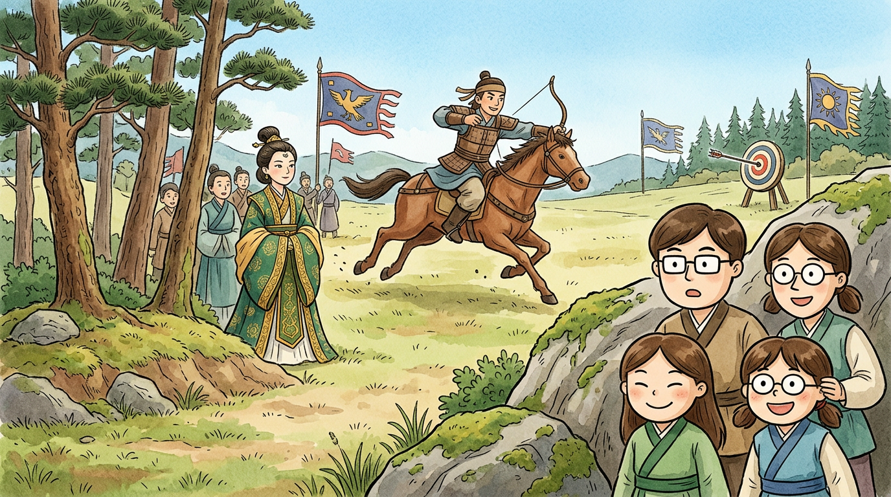
활 쏘기 대회에서 우승한 용감한 장군 온달
사람들이 '바보'라고 부른 온달은 정말 바보였을까요? 겉모습으로 사람을 판단하면 안 되는 이유를 생각해봅시다.
백제에 서동이라는 영리한 소년이 살았어요. 서동의 본명은 장(璋)이었고, 마(麻)를 캐어 팔아 생계를 이어갔기에 사람들이 서동(薯童, '마를 캐는 아이')이라 불렀답니다.
어느 날 서동은 신라 진평왕의 셋째 딸 선화공주가 아름답기로 유명하다는 소문을 들었어요. 서동은 신라의 수도 서라벌로 몰래 들어가, 아이들에게 마를 나눠주며 노래 하나를 가르쳤어요.
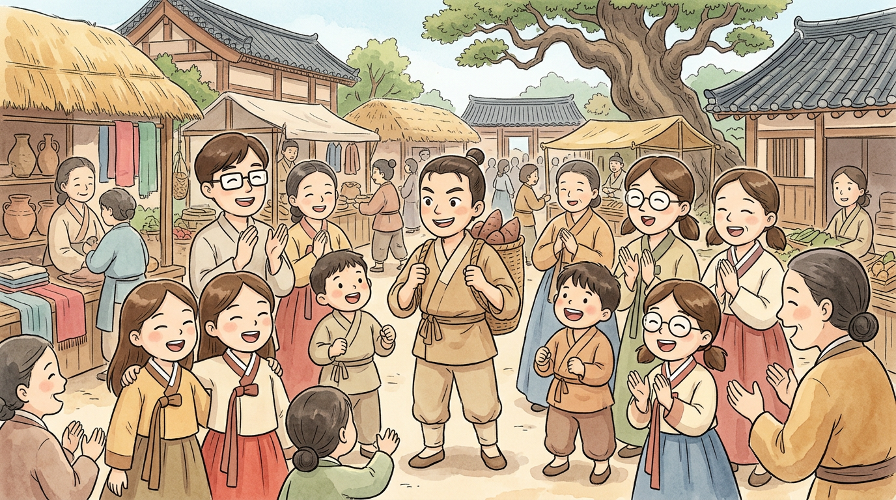
서라벌 아이들에게 노래를 가르치는 서동
"선화공주님은 남몰래 서동 도련님을 밤마다 만나러 간대요~"
이 노래가 서라벌 전체에 퍼지자, 진평왕은 크게 노하여 선화공주를 궁 밖으로 내보냈어요.
유배길에 나선 선화공주 앞에 서동이 나타나 도움을 주었고, 두 사람은 사랑에 빠져 결혼했답니다. 서동은 훗날 백제의 무왕(武王)이 되었고, 선화공주는 백제의 왕비가 되어 아름다운 미륵사를 지었다고 해요.
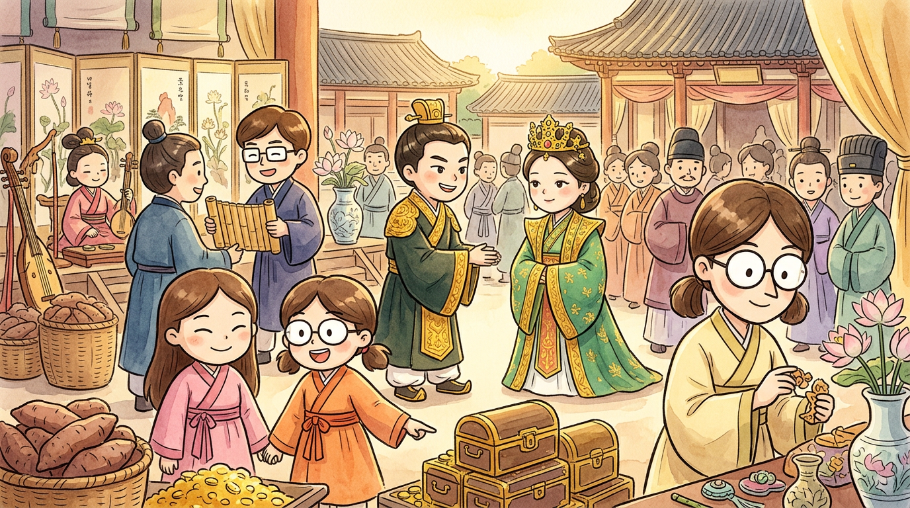
백제의 왕이 된 서동과 선화공주
향가(鄕歌): 신라시대에 한자의 음과 뜻을 빌려 우리말로 적은 노래. 서동요는 가장 오래된 향가 중 하나예요.
유배: 죄를 지은 사람을 먼 곳으로 보내는 벌
고구려의 영웅 연개소문을 기억하나요? 다섯 자루의 칼을 찬 무시무시한 장군이었죠. 연개소문은 당나라의 침략을 여러 번 막아낸 고구려의 수호자였어요.
그런데 665년, 연개소문이 세상을 떠나자 큰 비극이 시작되었어요. 맏아들 연남생이 아버지의 자리(대막리지)를 물려받았는데, 남생이 지방을 둘러보러 수도를 비운 사이, 동생들 연남건과 연남산이 반란을 일으켰답니다.
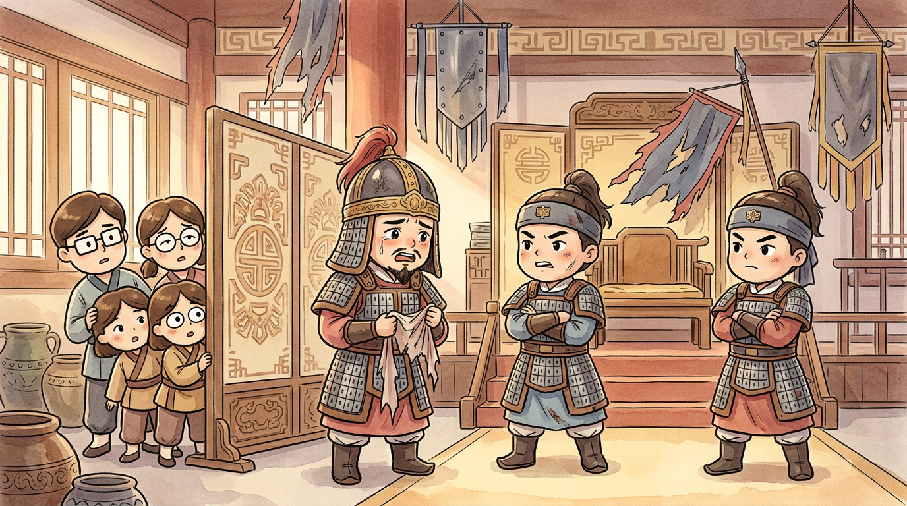
권력을 놓고 다투는 연개소문의 세 아들
형을 몰아낸 동생들은 평양성의 문을 닫고 남생의 귀환을 막았어요. 분노한 남생은 놀라운 결정을 내렸습니다 - 적국인 당나라에 항복하고, 당나라 군대의 길잡이가 된 것이에요!
결국 668년, 남생의 안내를 받은 나당연합군이 평양성을 공격하여 고구려는 멸망하고 말았어요. 700년 넘는 역사를 가진 위대한 나라가, 형제간의 다툼 때문에 무너진 거예요.
연남생이 적국인 당나라에 도움을 청한 것은 올바른 선택이었을까요? 가족 간의 싸움이 얼마나 큰 결과를 가져올 수 있는지 생각해봅시다.
고구려가 멸망한 뒤, 수많은 고구려 사람들이 당나라로 끌려갔어요. 고구려의 장군 집안 출신인 대조영도 아버지 걸걸중상(대중상)과 함께 당나라 영주(營州)에서 포로 생활을 하고 있었답니다.
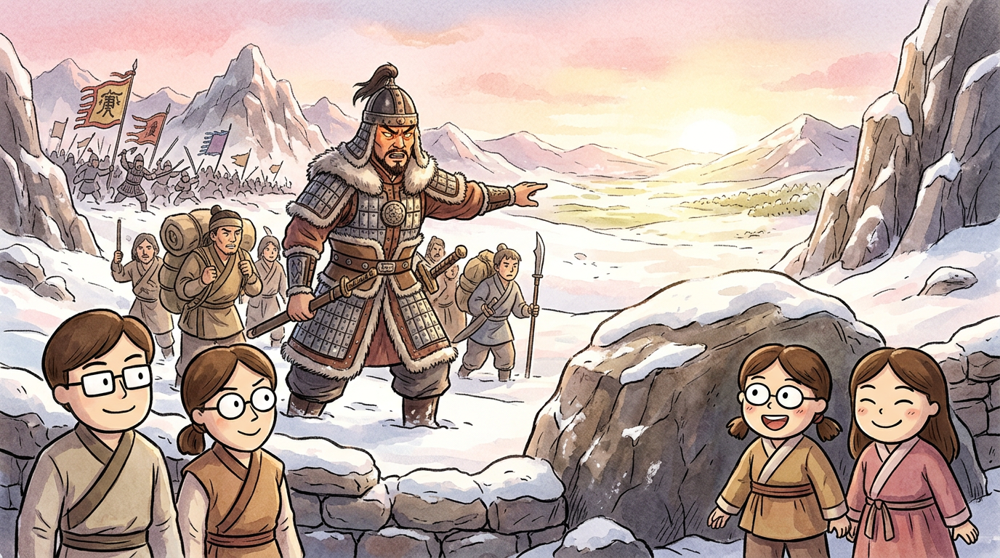
눈보라 속에서 고구려 유민들을 이끄는 대조영
696년, 거란족이 당나라에 반란을 일으키자, 대조영은 이 혼란을 기회로 삼았어요! 고구려 유민과 말갈족을 이끌고 동쪽으로 탈출을 시작했답니다.
당나라는 이걸수(李楷固)라는 장군을 보내 추격했어요. 대조영은 천문령 전투에서 당군을 대파하고, 마침내 698년 동모산에 도착하여 새 나라를 세웠어요. 그 나라가 바로 발해(渤海)입니다!
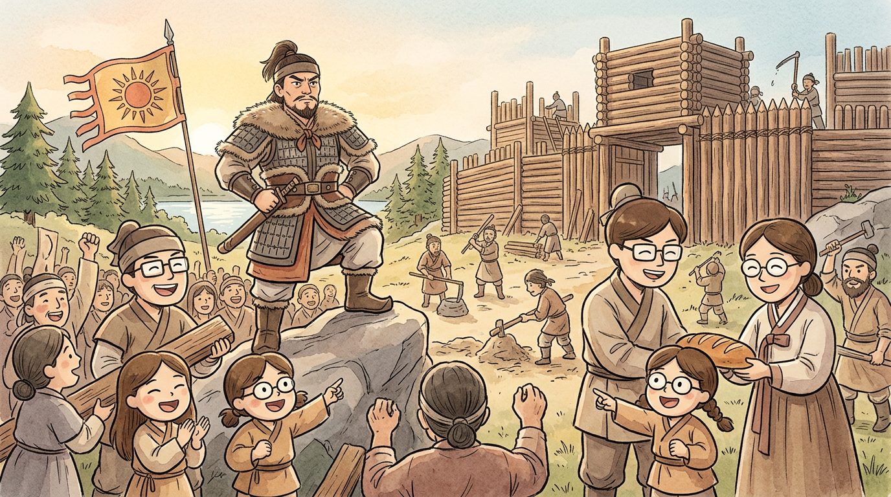
동모산에서 발해 건국을 선포하는 대조영
발해는 고구려의 영토 대부분을 되찾았고, 중국에서도 "해동성국(海東盛國)" - '바다 동쪽의 융성한 나라'라고 불렀답니다. 이때부터 남쪽의 통일신라와 북쪽의 발해가 함께 있는 남북국 시대가 시작되었어요.
발해의 수도 상경성은 당나라 수도 장안을 본떠 만들었어요. 온돌(바닥 난방)이 있었는데, 이것은 고구려에서 이어받은 기술이랍니다! 고구려의 전통이 발해에서 살아 숨 쉬고 있었던 거예요.
북쪽의 발해와 남쪽의 신라
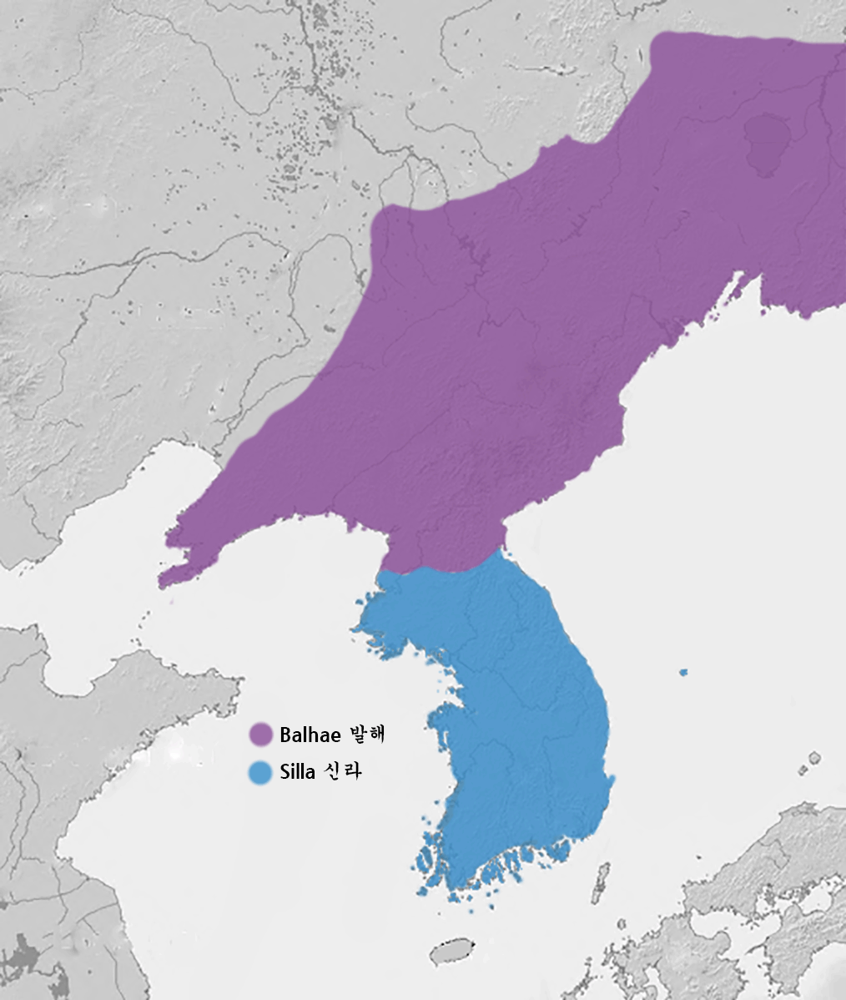
830년경 남북국시대 (출처: Wikimedia Commons)
평강공주는 왜 편안한 궁궐을 떠나 가난한 온달을 찾아갔을까? '용기'란 무엇일까?
평강공주의 용기는 '남들이 정해준 길'이 아니라 '자기가 옳다고 믿는 길'을 선택한 것이에요. 궁궐에 있으면 편하지만, 아버지의 약속(말)을 지키는 것이 더 중요하다고 생각한 거예요. 이것은 단순히 사랑 이야기가 아니라, '자기 결정권'과 '신념을 지키는 용기'에 대한 이야기예요. 안전하지만 옳지 않은 것과, 힘들지만 옳은 것 사이에서 후자를 택하는 것이 진짜 용기랍니다.
연개소문의 아들들은 왜 힘을 합치지 못하고 싸웠을까? 형제(가족)가 싸우면 왜 더 큰 피해가 생길까?
권력은 사람을 변하게 만들어요. 아버지가 살아있을 때는 한 가족이었지만, 아버지가 죽자 '누가 힘을 가질 것인가'를 놓고 싸운 거예요. 가족이 싸우면 피해가 큰 이유는, 서로의 약점을 가장 잘 알고 있기 때문이에요. 연남생은 고구려의 비밀을 당나라에 알려주었고, 이것이 나라를 망하게 했어요. '집안 싸움이 나라를 망친다'는 교훈은 오늘날 기업이나 정치에서도 그대로 적용돼요.
대조영은 나라가 망한 뒤에도 포기하지 않고 새 나라(발해)를 세웠어요. '실패 후에 다시 일어서는 힘'은 어디서 올까?
'회복탄력성'이라고 하는 이 힘은 여러 곳에서 와요. 첫째, 자기가 지키고 싶은 것(고구려의 정신, 동료들)이 있을 때 포기하지 않게 돼요. 둘째, 함께하는 사람들이 있을 때 힘이 나요. 대조영은 혼자가 아니라 고구려 유민들과 함께했어요. 셋째, 실패를 '끝'이 아니라 '새로운 시작'으로 보는 마음가짐이 중요해요. 대조영에게 고구려 멸망은 끝이 아니라 발해의 시작이었답니다.
660년 백제가 멸망하고, 668년 고구려가 멸망했어요. "야호, 드디어 삼국통일이다!" 하고 기뻐할 줄 알았는데... 진짜 위기는 그 다음에 찾아왔답니다.
신라는 백제와 고구려를 무너뜨리기 위해 당나라와 손을 잡았어요. 하지만 당나라의 진짜 속마음은 따로 있었답니다. 당나라는 백제 땅에 웅진도독부를, 고구려 땅에 안동도호부를 설치했어요. 그리고 놀랍게도 신라 땅에도 계림도독부를 두었답니다!
이것은 한반도 전체를 당나라의 영토로 만들겠다는 뜻이었어요. 함께 싸운 동맹국이 갑자기 한반도 전체를 삼키려 한 거예요!
도독부/도호부: 당나라가 정복한 지역을 다스리기 위해 설치한 관청. 그 지역을 당나라 영토로 만들겠다는 뜻이에요.
문무왕은 아버지 태종무열왕(김춘추)의 뜻을 이어 삼국통일을 완성한 왕이에요. 문무왕은 당나라의 야욕을 절대 참을 수 없었어요.
670년, 신라는 고구려 부흥군을 도와 당나라에 맞서 싸우기 시작했어요. 7년간의 피비린내 나는 전쟁, 나당전쟁이 시작된 거예요!
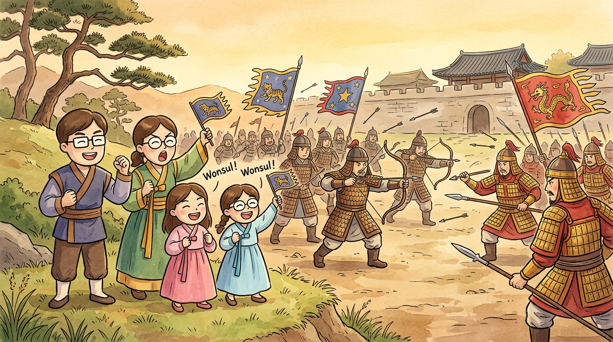
당나라 군대에 맞서 싸우는 신라 군대
675년, 당나라는 무려 20만 대군을 보내 신라를 공격했어요. 신라의 운명이 걸린 결전이 매소성(지금의 경기도 양주 근처)에서 벌어졌답니다.
신라 장군들은 지형을 이용한 뛰어난 전략으로 당나라 대군을 물리쳤어요! 당나라 군사들이 버리고 간 전마(戰馬)가 무려 3만 380필이나 되었다고 해요. 얼마나 큰 승리였는지 짐작이 가나요?
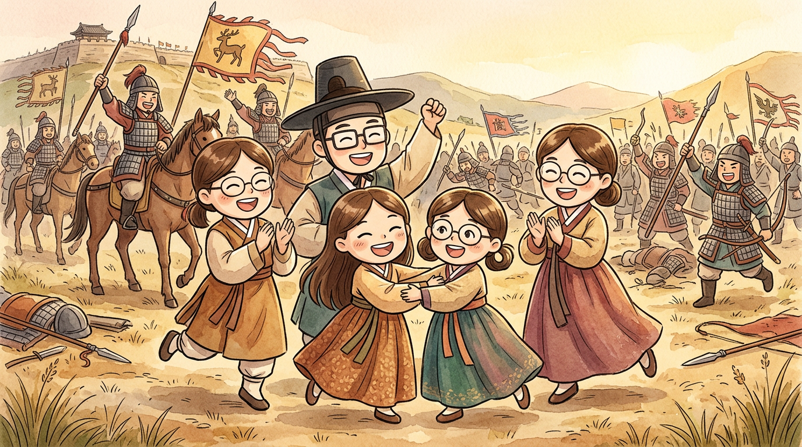
매소성 전투에서 당나라 대군을 물리치는 신라군
매소성에서 크게 진 당나라는 이번에는 바다로 쳐들어왔어요. 기벌포(지금의 충남 서천 앞바다)에서 신라 수군과 당나라 수군이 맞붙었답니다.
신라의 용감한 수군은 22번이나 크고 작은 해전을 치르며 당나라 함대를 격파했어요! 결국 당나라는 한반도에서 완전히 물러났답니다.
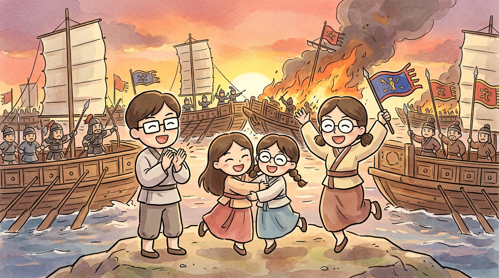
기벌포에서 당나라 함대를 격파하는 신라 수군
676년, 대동강 이남의 한반도를 신라가 차지하게 되었어요. 이것이 바로 진정한 삼국통일의 완성이에요!
신라의 삼국통일에 대해서는 두 가지 시각이 있어요. "한반도를 하나로 통일한 위대한 업적"이라는 긍정적인 시각과, "당나라를 끌어들여 같은 민족인 고구려와 백제를 무너뜨렸다"는 비판적인 시각이에요. 하지만 적어도 나당전쟁에서 당나라를 물리치고 한반도의 주권을 지킨 것은 분명 위대한 일이랍니다.
나당전쟁을 승리로 이끈 문무왕은 681년 세상을 떠나기 전, 놀라운 유언을 남겼어요.
"나를 동해 바다에 장사 지내라. 용이 되어 신라를 영원히 지키겠다."
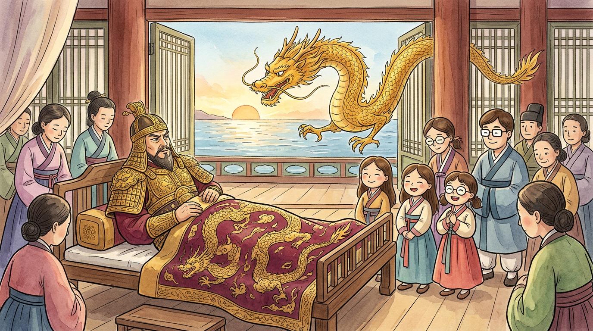
동해의 용이 되어 신라를 지키겠다는 문무왕
신하들은 왕의 유언대로 동해 바닷가의 큰 바위 아래에 왕을 모셨어요. 이것이 경주 감포 앞바다에 있는 대왕암(문무왕 해중릉)이에요. 세계에서 유일한 바다 무덤이랍니다!
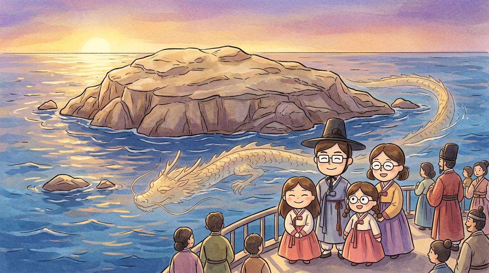
동해 바다 위의 대왕암 - 문무왕이 잠든 곳
대왕암은 지금도 경주 감포 앞바다에서 볼 수 있어요. 바위 아래에 십자형 수로가 있어서 파도가 들어오면 물이 자연스럽게 순환한답니다. 1,300년 전의 놀라운 설계예요! 그리고 바다에서 보면 정말 용의 모습처럼 보인다고 해요.
삼국을 통일한 신라의 영토
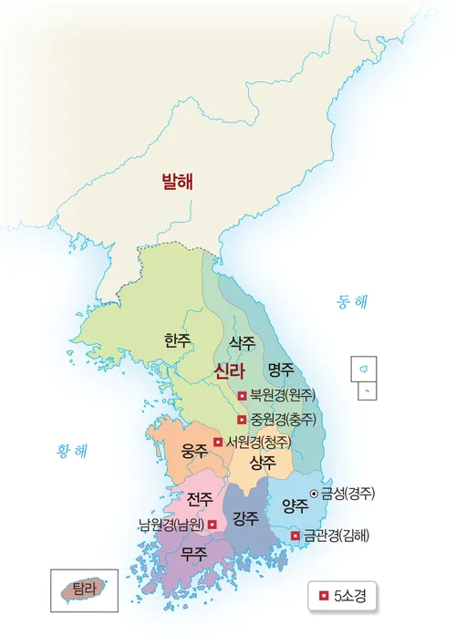
668년 통일신라 (출처: Wikimedia Commons)
신라는 당나라와 함께 싸워서 삼국을 통일했는데, 왜 바로 당나라와 다시 싸워야 했을까? '동맹'은 영원할 수 있을까?
동맹은 '공통의 목표'가 있을 때만 유지돼요. 신라와 당나라의 공통 목표는 '백제·고구려를 무너뜨리는 것'이었는데, 그 목표가 달성되자 서로의 진짜 속마음이 드러난 거예요. 당나라는 한반도 전체를 차지하고 싶었고, 신라는 독립을 지키고 싶었으니까요. 이것은 국제 관계에서 '영원한 친구도 영원한 적도 없다, 영원한 것은 국가의 이익뿐'이라는 교훈을 보여줘요.
문무왕은 죽어서 '바다의 용이 되어 나라를 지키겠다'고 했어요. 왕이 이런 유언을 남긴 이유는 무엇이었을까?
문무왕은 일생 동안 전쟁을 치르며 나라를 지켰어요. 죽음 앞에서도 걱정했던 것은 '내가 죽은 뒤에 나라가 안전할까'였어요. 이 유언은 단순한 미신이 아니라, 다음 왕(신문왕)과 백성들에게 '왕이 죽어서도 나라를 지키고 있으니 걱정 말라'는 메시지를 전한 거예요. 리더가 마지막 순간까지 공동체를 생각하는 모습은 백성들에게 큰 위안과 단결의 힘을 주었답니다.
기벌포 해전에서 신라 수군은 22번이나 싸웠어요. 한두 번이 아니라 22번을 포기하지 않은 이유는 무엇이었을까?
만약 신라가 한 번 지고 포기했다면, 한반도는 당나라의 영토가 되었을 거예요. 22번 싸운 것은 '목숨을 걸고 지켜야 할 것'이 있었기 때문이에요. 그것은 바로 나라의 독립과 자주권이에요. 또한 수군 장수들과 병사들이 '지금 포기하면 모든 것을 잃는다'는 절박함이 있었을 거예요. 이것은 우리에게 '정말 중요한 것을 위해서는 끝까지 포기하지 말라'는 교훈을 줘요.
문무왕이 세상을 떠난 후, 아들 신문왕이 왕위에 올랐어요. 신문왕 앞에는 큰 과제가 놓여 있었답니다. 전쟁은 끝났지만, 넓어진 나라를 어떻게 잘 다스릴 것인가?
신문왕이 왕이 되자마자 장인인 김흠돌이 반란을 일으켰어요. 강력한 귀족이었던 김흠돌은 왕보다 자신의 힘이 더 세다고 생각했던 거예요. 하지만 신문왕은 단호하게 반란을 진압하고, 이 기회를 이용해 힘이 너무 센 귀족들의 세력을 약화시켰답니다.
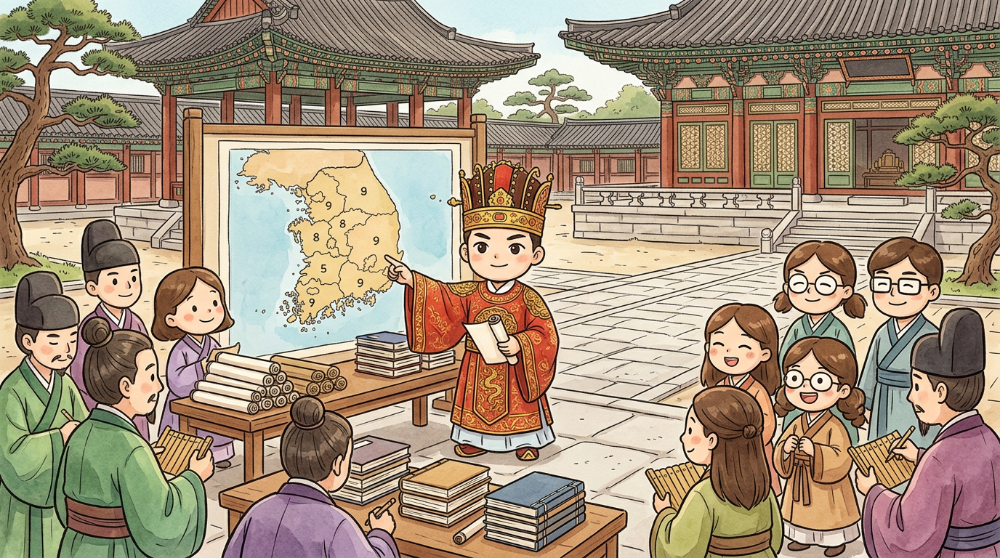
9주 5소경 지도를 보며 개혁을 계획하는 신문왕
신문왕은 넓어진 나라를 효과적으로 다스리기 위해 9주 5소경 제도를 만들었어요.
9주(九州): 전국을 9개 지역으로 나누고, 각 지역에 지방관을 파견했어요. 옛 신라, 백제, 고구려 지역을 모두 포함하는 체계적인 행정구역이었답니다.
5소경(五小京): 수도 경주가 한반도의 동남쪽 끝에 치우쳐 있어서, 전국 5곳에 '작은 수도'를 두어 지역 균형을 맞추었어요. 지금의 충주, 원주, 김해, 남원, 청주에 해당한답니다.
녹읍(祿邑): 귀족에게 토지와 그 토지의 농민까지 주어 세금을 걷게 하는 제도. 귀족의 힘이 매우 커져요.
녹봉(祿俸): 토지 대신 곡식(쌀)으로 월급을 주는 제도. 왕이 신하들을 더 잘 통제할 수 있어요.
신문왕의 가장 중요한 개혁은 녹읍 폐지예요. 귀족들은 녹읍을 통해 넓은 땅과 그 땅의 백성들로부터 세금을 걷으며 왕보다 더 큰 힘을 키워왔어요. 신문왕은 이 제도를 없애고 대신 녹봉(곡식 월급)을 지급했답니다.
귀족들은 당연히 반발했지만, 김흠돌의 반란을 진압한 후라 감히 다시 반란을 일으키지 못했어요.
신문왕은 국학(國學)이라는 교육기관을 설립했어요. 유학(유교의 경전)을 가르쳐 능력 있는 관리를 길러내기 위해서였답니다. 이것은 귀족의 혈통이 아니라 학문의 실력으로 관리를 뽑겠다는 의지의 표현이었어요.
682년, 동해에서 신기한 일이 일어났어요. 작은 산 하나가 감은사 쪽으로 떠온다는 보고가 올라온 거예요!
신문왕이 직접 바닷가에 나가보니, 바다에서 금빛 용이 나타나 대나무 한 그루를 주며 이렇게 말했어요.
"이 대나무로 피리를 만들면 천하가 태평해질 것이오."
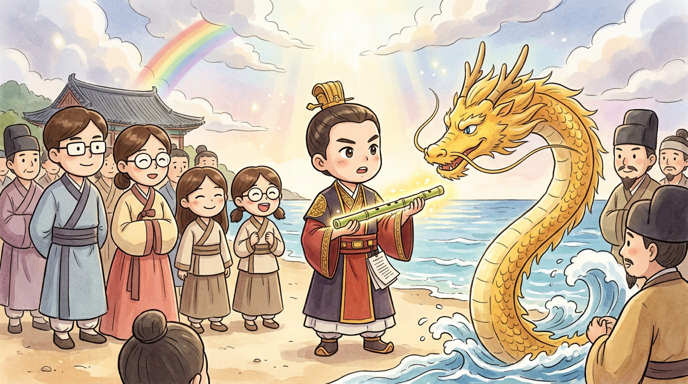
바다의 용에게서 만파식적의 대나무를 받는 신문왕
신문왕은 이 대나무로 피리를 만들었어요. 이것이 바로 만파식적(萬波息笛) - '만 가지 파도를 잠재우는 피리'라는 뜻이에요. 이 피리를 불면 적군이 물러가고, 병이 낫고, 가뭄에 비가 오고, 비가 올 때는 개었다고 해요.
만파식적 이야기에서 용은 바로 아버지 문무왕이에요! 죽어서 동해의 용이 되겠다고 한 문무왕이, 아들 신문왕에게 나라를 지킬 보물을 전해준 거예요. 아버지의 나라 사랑이 아들에게 이어진 감동적인 이야기랍니다.
감은사(感恩寺)는 문무왕이 나당전쟁 승리를 감사하며 짓기 시작하고, 신문왕이 완성한 절이에요. '은혜에 감사한다'는 뜻이랍니다.
통일신라의 가장 큰 특징이자, 나중에 가장 큰 문제가 되는 제도가 바로 골품제(骨品制)예요.
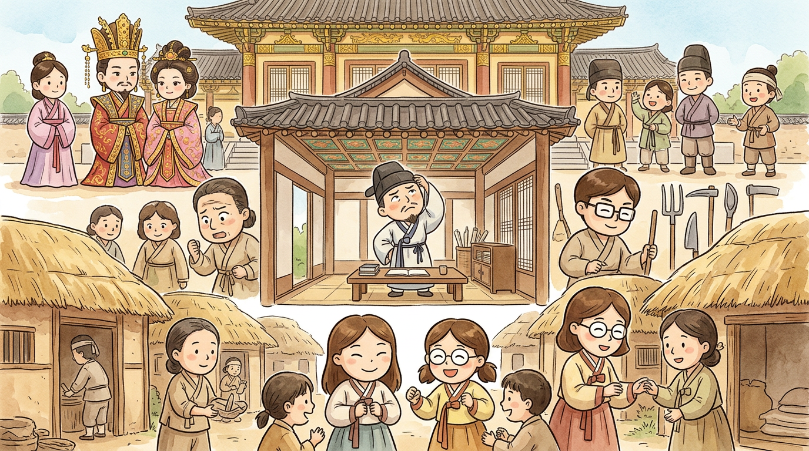
신분에 따라 나뉘어진 통일신라 사회
골품제는 뼈(骨)의 등급(品)이라는 뜻으로, 태어날 때부터 혈통에 따라 신분이 정해지는 제도예요.
성골(聖骨): 왕이 될 수 있는 최고 신분이었지만, 통일신라 이전에 이미 사라졌어요.
진골(眞骨): 왕족과 최고 귀족. 가장 높은 관직(이벌찬, 1등급)까지 올라갈 수 있었어요.
6두품: 뛰어난 학자가 많았지만, 아무리 능력이 출중해도 아찬(6등급)까지만 올라갈 수 있었어요.
5두품, 4두품: 더 낮은 관직만 가능했답니다.
관직뿐만 아니라 생활 전체가 골품에 따라 정해져 있었어요. 집의 크기, 수레의 장식, 옷의 색깔, 심지어 그릇의 재질까지도요!
만약 여러분이 골품제 사회에서 6두품으로 태어났다면, 아무리 공부를 열심히 해도 6등급 관직까지밖에 올라갈 수 없어요. 이런 사회에서 여러분은 어떤 기분이 들까요? 왜 이런 제도가 나중에 신라를 무너뜨리는 원인이 되었을까요?
신문왕은 귀족들의 녹읍(토지)을 빼앗고 녹봉(곡식 월급)으로 바꿨어요. 이 변화가 왜 그렇게 중요했을까?
녹읍은 귀족에게 '나라 안의 작은 나라'를 주는 것과 같았어요. 토지와 그 위의 백성들까지 지배할 수 있었으니까요. 이것을 녹봉으로 바꾸면 귀족은 왕에게서 월급을 받는 '직원'이 되는 거예요. 돈줄을 왕이 쥐고 있으니 귀족이 왕에게 반항하기 어려워지죠. 이것은 단순한 급여 방식의 변화가 아니라, 나라의 권력 구조 자체를 바꾼 혁명적인 개혁이에요.
골품제에서 6두품은 아무리 공부를 잘해도 6등급까지만 올라갈 수 있었어요. 이런 '보이지 않는 천장'이 사회에 어떤 영향을 줄까?
'유리 천장(glass ceiling)'이라고도 불리는 이런 한계는 사회 전체의 발전을 막아요. 능력 있는 사람이 좌절하면 그 재능이 낭비되고, 능력 없는 사람이 높은 자리를 차지하면 나라가 잘 돌아가지 않아요. 또한 '아무리 노력해도 소용없다'는 생각이 퍼지면 사람들이 노력 자체를 그만두게 돼요. 최치원 같은 천재가 해인사에 숨어버린 것이 바로 그 결과예요. 오늘날에도 성별, 출신 지역, 학벌로 인한 차별이 있다면 같은 문제가 생길 수 있어요.
만파식적(만 가지 파도를 잠재우는 피리) 이야기는 실제로는 불가능한 이야기예요. 그런데 왜 이런 이야기를 만들고 믿었을까?
만파식적 이야기는 '정치적 메시지'를 담고 있어요. '문무왕(아버지)의 나라 사랑이 신문왕(아들)에게 이어진다'는 것은 왕위의 정당성을 보여주는 거예요. 또한 '피리를 불면 모든 문제가 해결된다'는 것은 백성들에게 '왕이 다스리는 나라에서는 걱정할 것이 없다'는 안심의 메시지를 준 거예요. 이처럼 신화와 전설은 단순한 옛이야기가 아니라, 그 시대 사람들의 바람과 정치적 의도를 담고 있답니다.
통일신라 시대는 한국 역사에서 가장 아름다운 문화유산을 남긴 시기예요. 지금도 세계 사람들이 감탄하는 보물들을 만나볼까요?
751년(경덕왕 10년), 재상 김대성이 두 개의 위대한 건축물을 짓기 시작했어요. 하나는 불국사, 다른 하나는 석굴암이에요.
전설에 따르면 김대성에게는 두 번의 삶이 있었어요. 전생에는 가난한 여인의 아들로 태어나 스님에게 밭을 시주하고 세상을 떠났고, 현생에는 귀족 김문량의 아들로 다시 태어났답니다. 태어날 때 왼손에 '대성(大城)'이라 쓰인 금간자를 쥐고 있었다고 해요!
김대성은 현생의 부모를 위해 불국사를, 전생의 부모를 위해 석굴암을 지었답니다. 두 분의 부모님 모두에게 효도하고 싶었던 거예요.
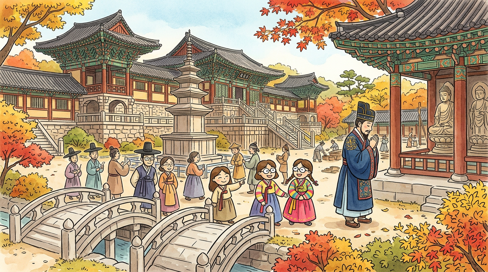
건설 중인 불국사의 장엄한 모습
불국사(佛國寺)는 '부처의 나라를 이 땅에 만든 절'이라는 뜻이에요. 파란 구름과 흰 구름을 형상화한 청운교/백운교, 연꽃과 칠보를 상징하는 연화교/칠보교 등 아름다운 돌다리가 이 세상과 부처의 세계를 잇는 다리 역할을 한답니다.
석굴암은 화강암 360여 개를 정교하게 쌓아 만든 인공 석굴이에요. 자연 동굴이 아니라 사람이 돌을 깎고 쌓아서 만든 것이라는 사실이 정말 놀랍죠?
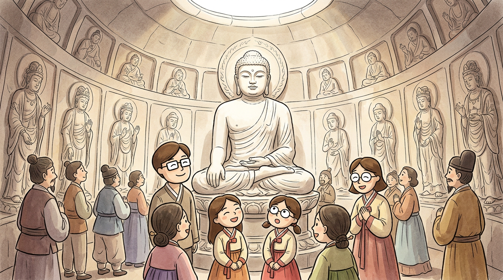
석굴암 본존불의 장엄하고 평화로운 모습
가운데 앉아 계신 본존불은 높이 3.5m의 거대한 불상이에요. 부드러운 미소와 당당한 자세가 보는 사람의 마음을 편안하게 해준답니다. 주위 벽면에는 39개의 불상이 조각되어 있어요.
석굴암의 놀라운 점은 과학적 설계에 있어요. 돔(둥근 천장)의 구조, 환기 시스템, 습기를 조절하는 샘물까지, 1,300년 전의 건축 기술이라고 믿기 어려울 정도랍니다!
석굴암과 불국사는 1995년 유네스코 세계유산으로 등재되었어요. 세계 어디에도 이런 인공 석굴은 없답니다. 일본 식민지 시절 일본인들이 석굴암을 해체했다가 다시 조립하면서 원래의 과학적 환기 시스템을 망가뜨렸는데, 지금도 완전히 복원하지 못하고 있어요.
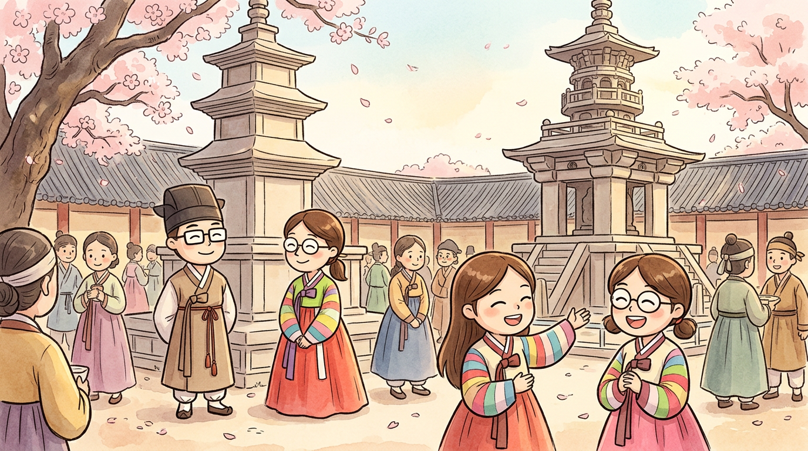
불국사 대웅전 앞의 석가탑과 다보탑
불국사 대웅전 앞마당에는 두 개의 유명한 탑이 나란히 서 있어요.
석가탑(釋迦塔)은 단순하고 균형 잡힌 아름다움을 가지고 있어요. '무영탑(無影塔, 그림자가 없는 탑)'이라는 별명이 있답니다. 전설에 의하면 백제 석공 아사달의 아내 아사녀가 남편을 기다리다 연못에 비친 탑 그림자를 보고 몸을 던졌다고 해요.
다보탑(多寶塔)은 화려하고 독특한 장식이 특징이에요. 세상에 하나뿐인 디자인으로, 어떻게 이런 복잡한 구조를 돌로 만들었는지 놀라울 따름이에요.
1966년, 석가탑을 수리하던 중 놀라운 발견이 있었어요. 탑 안에서 무구정광대다라니경(無垢淨光大陀羅尼經)이라는 불경이 나온 거예요!
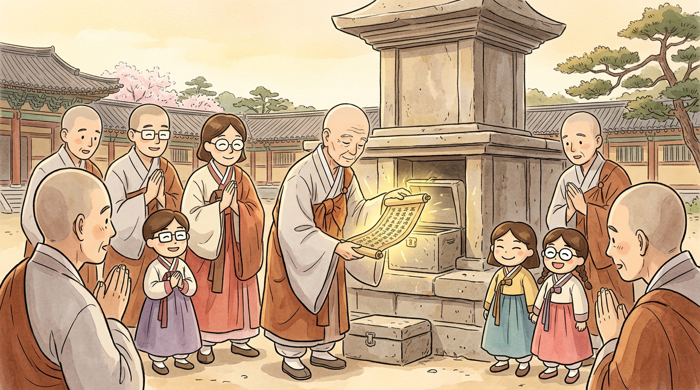
석가탑에서 세계 최초의 목판 인쇄물을 발견한 순간
이것은 나무 판에 글자를 새기고 종이에 찍어낸 목판 인쇄물이에요. 석가탑이 751년에 만들어졌으니, 이 인쇄물은 적어도 751년 이전에 만들어진 것이랍니다. 세계에서 가장 오래된 목판 인쇄물이에요!
목판 인쇄가 중요한 이유는 무엇일까요? 손으로 베껴 쓰면 책 한 권 만드는 데 몇 달이 걸리지만, 목판을 한 번 새기면 수백, 수천 권을 찍을 수 있어요. 지식을 빠르게 퍼뜨릴 수 있는 혁명적인 기술이었답니다!
경덕왕은 아버지 성덕왕의 업적을 기리기 위해 거대한 종을 만들기 시작했어요. 하지만 경덕왕 때 완성하지 못하고, 아들 혜공왕 때인 771년에 드디어 완성되었답니다.
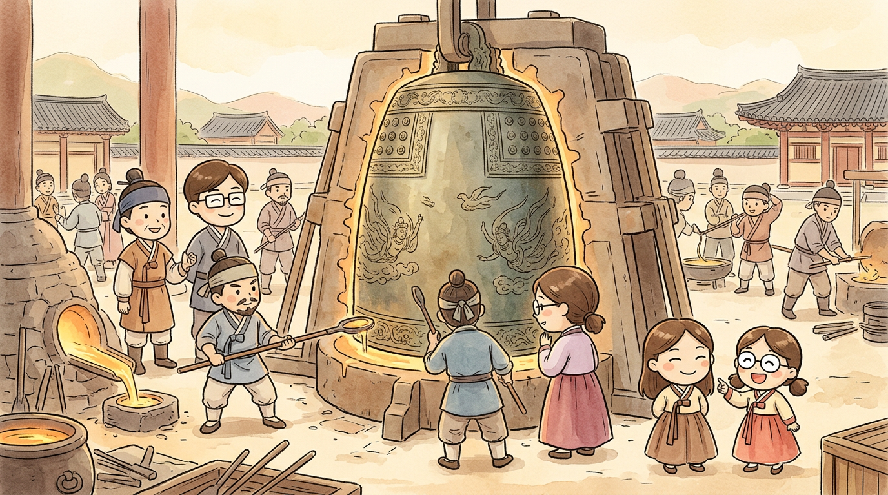
거대한 에밀레종(성덕대왕신종)을 만드는 장인들
성덕대왕신종은 높이 3.66m, 무게 약 18.9톤으로, 현존하는 한국 최대의 종이에요! 종 표면에는 하늘을 나는 천녀(비천상)가 아름답게 새겨져 있답니다.
종이 도무지 완성되지 않자, 절의 스님이 점을 쳐보았어요. "시주를 다 받아오지 않았다"는 점괘가 나왔답니다. 그때 한 가난한 여인이 말했어요. "줄 것이라곤 이 아이밖에 없네요." 결국 아이를 쇳물에 넣어 종을 완성했고, 종소리가 "에밀레... 에밀레..."(엄마를 부르는 소리)처럼 들린다고 해요.
하지만 과학적으로 종에서 사람 뼈 성분은 발견되지 않았어요. 이 전설은 사실이 아닐 가능성이 높지만, 위대한 창조물에는 희생이 따른다는 교훈을 담고 있답니다.
석굴암은 1,300년 전에 만들어졌는데 환기 시스템과 습도 조절 장치가 있어요. 옛사람들의 '과학'과 오늘날의 '과학'은 어떻게 다를까?
옛사람들의 과학은 '경험'에서 나왔어요. 수많은 시행착오를 거치며 '이렇게 하면 된다'는 것을 알아냈지만, '왜 되는지'를 이론으로 설명하지는 못했어요. 반면 현대 과학은 원리를 먼저 이해하고 설계해요. 하지만 결과물의 수준은 놀라울 정도로 비슷하거나 오히려 옛것이 더 나은 경우도 있어요. 일본이 석굴암을 해체했다가 원래의 환기 시스템을 복원하지 못한 것이 그 증거랍니다.
에밀레종 전설에서 아이를 쇳물에 넣었다는 이야기는 과학적으로 거짓이에요. 그런데 왜 이 전설이 1,000년 넘게 전해졌을까?
사람들은 '놀라운 것'에는 '놀라운 이유'가 있어야 한다고 생각해요. 에밀레종의 아름다운 소리를 설명할 수 없었기에, '큰 희생이 있었기 때문'이라는 이야기를 만든 거예요. 또한 이 전설은 '위대한 것을 만들려면 대가를 치러야 한다'는 보편적인 진리를 담고 있어요. 세계 각국에도 비슷한 전설이 있답니다. 거짓 전설이라도 그 안에 담긴 교훈은 진실일 수 있어요.
무구정광대다라니경은 세계 최초의 목판 인쇄물이에요. '인쇄 기술'의 발명이 세상을 어떻게 바꾸었을까?
인쇄 기술은 '지식의 민주화'를 가져왔어요. 손으로 베끼던 시절에는 책이 매우 비싸서 귀족이나 스님만 읽을 수 있었지만, 인쇄가 가능해지면서 더 많은 사람이 지식을 접할 수 있게 되었어요. 이것은 수백 년 뒤 유럽의 구텐베르크 인쇄 혁명이 종교개혁과 르네상스를 이끈 것과 같은 원리예요. 오늘날의 인터넷도 같은 역할을 하고 있답니다. 지식이 퍼지면 세상이 바뀌어요.
통일신라에는 세계를 무대로 활동한 놀라운 사람들이 있었어요. 스님, 학자, 상인... 그들의 이야기를 만나볼까요?
원효(617~686)는 신라에서 가장 유명한 스님이에요. 젊은 시절, 원효는 친구 의상과 함께 당나라로 유학을 떠났어요.
여행 도중 밤이 되어 어두운 곳에서 잠을 잤는데, 한밤중에 너무 목이 마른 거예요. 더듬거려 찾은 바가지에 물이 담겨 있어서 "아, 시원하다!"며 벌컥벌컥 마셨어요.
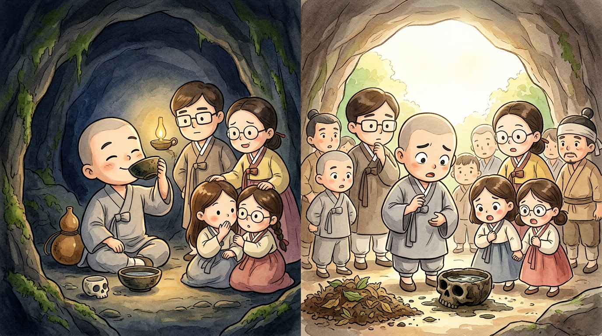
해골물을 마시고 깨달음을 얻는 원효
다음 날 아침, 밝은 빛 아래 보니... 그것은 해골에 고인 더러운 물이었어요! 원효는 구역질을 하다가 번개처럼 깨달음을 얻었답니다.
"어젯밤에는 달고 시원한 물이었는데, 오늘 보니 역겨운 해골물이라고? 모든 것은 마음이 만들어내는 것이구나!"
이것이 바로 "일체유심조(一切唯心造)" - '모든 것은 마음이 만든다'는 깨달음이에요.
원효는 당나라 유학을 포기하고 신라에 남았어요. 대신 어려운 불교 교리를 쉬운 말로 풀어 일반 백성들에게 전했답니다. 거리에서 노래하고 춤추며 불교를 가르쳤어요.
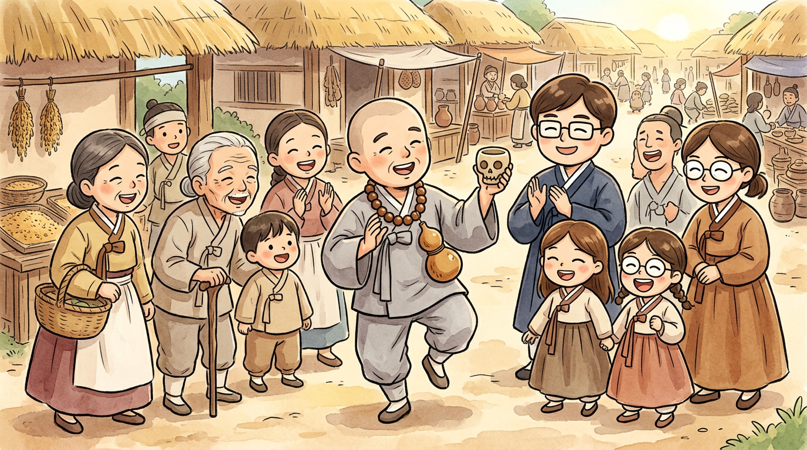
거리에서 노래하며 백성들에게 불교를 전하는 원효
원효의 화쟁(和諍) 사상은 '서로 다른 주장을 조화시키자'는 뜻이에요. "나만 옳다"가 아니라 "서로 다른 생각도 하나로 모을 수 있다"는 거예요. 1,300년 전의 생각이지만 지금 우리에게도 꼭 필요한 지혜가 아닐까요?
의상(625~702)은 원효와 달리 끝까지 당나라 유학을 마치고 돌아온 스님이에요. 우리나라 화엄종(華嚴宗)의 시조랍니다.
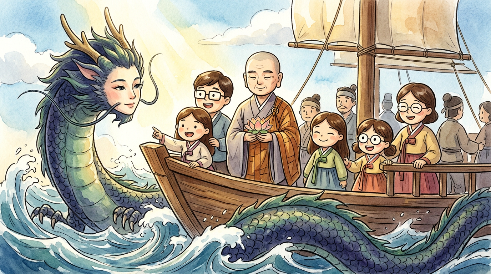
용으로 변한 선묘가 의상의 배를 호위하는 장면
의상이 당나라에서 공부할 때, 선묘라는 여인이 의상을 깊이 사모했어요. 하지만 스님인 의상은 마음을 받아들일 수 없었죠. 의상이 신라로 돌아가는 배에 오르자, 선묘는 바다에 몸을 던져 용으로 변해 의상의 배를 무사히 호위했다고 해요.
의상이 세운 부석사(浮石寺)에는 지금도 공중에 뜬 것 같은 바위가 있는데, 선묘가 변한 용이 바위로 변해 절을 지키고 있다는 전설이 전해져요.
혜초(704~787)는 통일신라의 승려로, 723년부터 4년간 인도(천축국) 5개 지역과 중앙아시아, 아랍 지역을 걸어서 여행했어요!
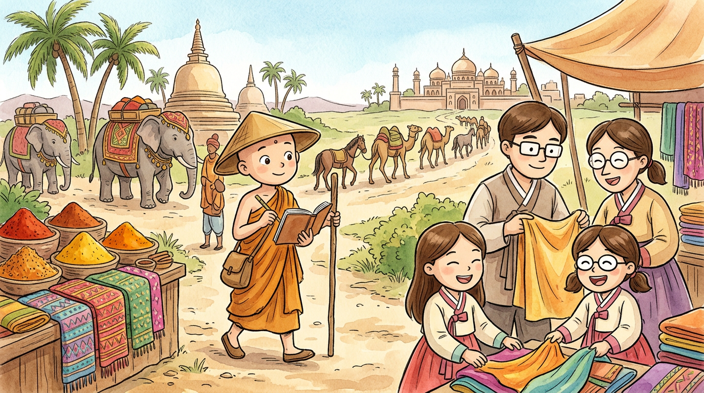
인도와 중앙아시아를 여행하는 혜초
혜초는 여행의 기록을 책으로 남겼어요. 《왕오천축국전(往五天竺國傳)》 - '다섯 인도를 다녀온 기록'이라는 뜻이에요. 이것은 한국인이 쓴 최초의 해외 여행기이자, 8세기 인도와 중앙아시아에 대한 세계에서 거의 유일한 기록이에요!
혜초의 여행기는 마르코 폴로의 《동방견문록》(13세기)보다 500년 이상 앞선 것이에요! 1908년 프랑스 탐험가 폴 펠리오가 중국 둔황 막고굴에서 발견했고, 현재 파리국립도서관에 보관되어 있답니다.
설총은 원효와 요석공주의 아들이에요. 설총의 가장 큰 업적은 이두(吏讀)를 체계화한 것이에요.
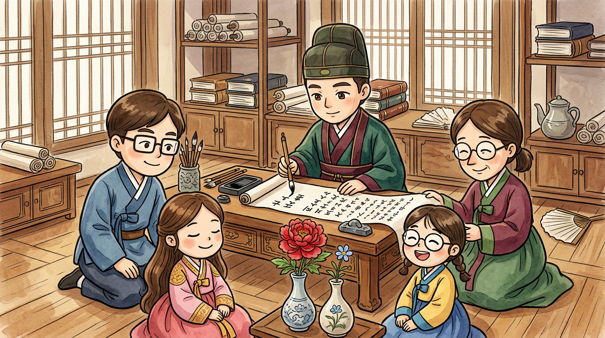
이두 문자를 연구하는 설총
이두는 한자의 음과 뜻을 빌려 우리말을 적는 방법이에요. 한글이 만들어지기 700년 전, 우리 조상들은 이렇게라도 우리말을 기록하려 노력했던 거예요.
설총은 왕에게 직접 "잘못하고 계십니다"라고 말하기 어려웠어요. 그래서 우화를 만들었답니다. 꽃의 왕 모란이 화려한 장미에 빠져 정사를 소홀히 하자, 수수한 할미꽃이 충고한다는 이야기예요. 왕은 이 이야기를 듣고 자신의 잘못을 깨달았다고 해요.
최치원(857~908?)은 6두품 출신의 천재 학자예요. 12살의 어린 나이에 당나라로 유학을 떠났어요!
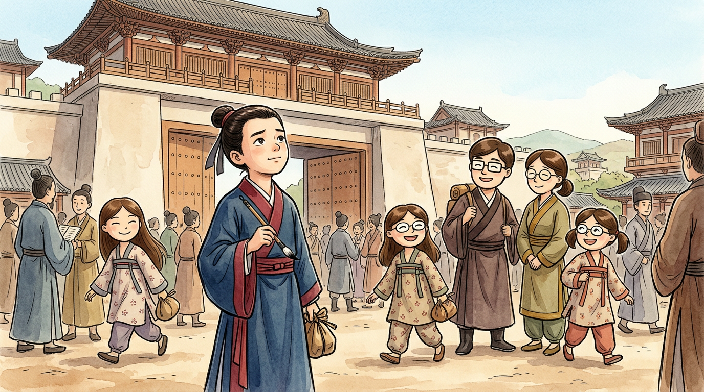
12살에 당나라에 도착한 어린 최치원
아버지의 당부는 엄격했어요. "10년 안에 과거에 합격하지 못하면 내 아들이 아니다!"
최치원은 밤낮으로 공부하여 6년 만에 당나라 과거시험 빈공과에 장원 급제했어요! 외국인이 당나라 시험에서 1등을 한 거예요!
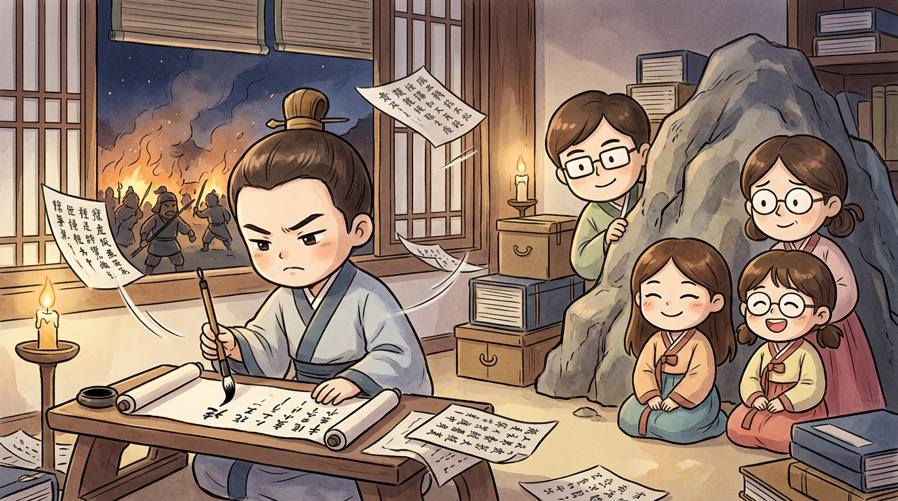
황소의 난에 맞서 격문을 쓰는 최치원
황소의 난이라는 큰 반란이 일어났을 때, 최치원은 《토황소격문(討黃巢檄文)》을 썼어요. 이 글이 어찌나 대단했는지, 반란군 두목 황소가 이 격문을 읽다가 놀라서 침대에서 떨어졌다는 일화가 전해진답니다!
28세에 신라로 돌아온 최치원은 진성여왕에게 시무 10조(나라를 바로잡는 10가지 방법)를 올렸어요. 하지만 6두품이라는 신분의 벽에 막혀 뜻을 펼치지 못하고, 결국 해인사에 은둔하며 쓸쓸한 나날을 보냈답니다.
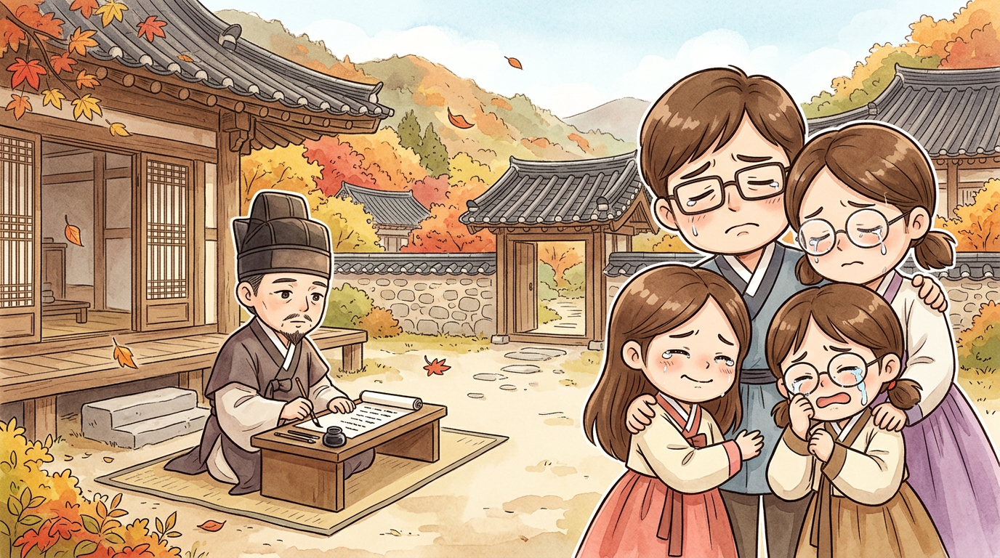
해인사에서 쓸쓸히 은둔하는 최치원
최치원은 당나라에서는 장원 급제한 천재였지만, 고국 신라에서는 6두품이라는 이유로 높은 자리에 오를 수 없었어요. 이것은 골품제의 어떤 문제점을 보여주나요?
장보고(?~846)는 '바다의 왕'이라 불리는 전설적인 인물이에요.
장보고는 당나라에서 군인으로 활동하던 중, 끔찍한 광경을 목격했어요. 신라 사람들이 해적에게 잡혀 노예로 팔리고 있었던 거예요! 분노한 장보고는 신라로 돌아와 흥덕왕을 만나 이렇게 말했어요.
"청해(지금의 완도)에 진을 세워 해적을 막게 해주십시오!"
왕은 군사 1만 명을 주고 장보고를 청해진 대사로 임명했어요.
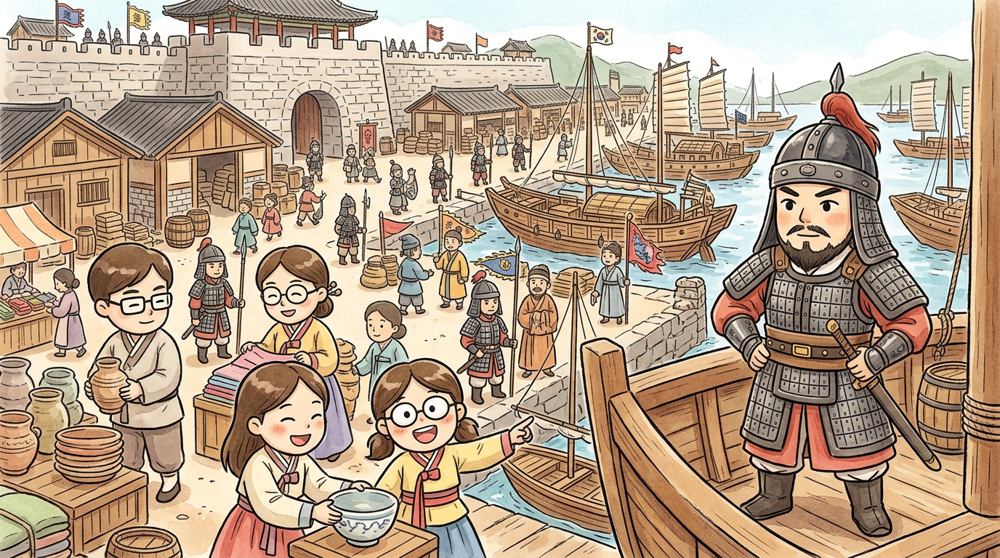
청해진을 거점으로 동아시아 무역을 지배하는 장보고
장보고는 1년 만에 해적을 모두 소탕하고, 청해진을 동아시아 국제 무역의 중심지로 만들었어요! 신라, 당나라, 일본을 잇는 해상 무역로를 장악한 거예요.
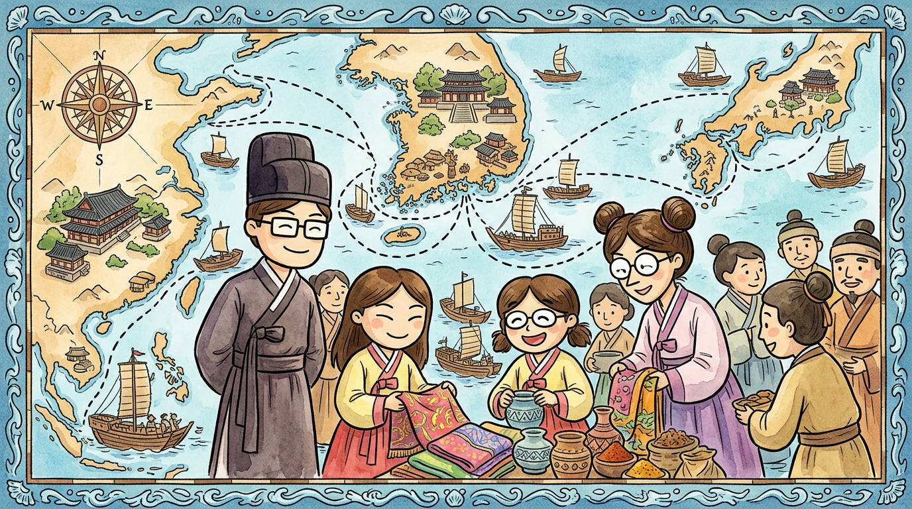
장보고의 동아시아 해상 무역 네트워크
당나라에는 신라방(新羅坊)이라 불리는 신라인 마을, 신라원(新羅院)이라는 절, 신라소(新羅所)라는 관청까지 있었어요. 장보고는 이 네트워크를 활용하여 동아시아 전체의 바다를 지배했답니다.
안타깝게도 장보고는 왕위 계승 다툼에 휘말렸어요. 신무왕을 도와 왕위에 올려놓았지만, 딸을 왕비로 삼으려는 시도가 진골 귀족들의 반발을 샀답니다. 결국 846년, 중앙에서 보낸 자객 염장에 의해 살해되었어요. 바다를 지배한 영웅의 안타까운 최후였습니다.
원효는 당나라 유학을 포기하고 신라에 남았어요. '해외 유학'과 '국내에서 노력하기' 중 어떤 것이 더 가치 있을까?
정답은 없어요. 의상은 당나라 유학을 마치고 돌아와 화엄종을 세웠고, 원효는 유학을 포기하고 백성들에게 불교를 전했어요. 둘 다 위대한 업적이죠. 중요한 것은 '어디서'가 아니라 '무엇을 하느냐'예요. 원효가 깨달은 것처럼 모든 것은 마음에 달렸어요. 해외에 가도 노력하지 않으면 소용없고, 국내에 있어도 열심히 하면 큰 일을 이룰 수 있답니다. 자기에게 맞는 길을 찾는 것이 가장 중요해요.
최치원은 당나라에서는 1등이었지만 신라에서는 높은 자리에 오르지 못했어요. '공정함'이란 무엇일까?
최치원의 이야기는 '공정함'에 대해 깊이 생각하게 해요. 당나라에서는 시험 실력으로 평가했지만(능력주의), 신라에서는 태어난 집안으로 평가했어요(혈통주의). 진정한 공정함은 '출발선이 같고, 노력한 만큼 인정받는 것'이에요. 하지만 현실에서는 완벽한 공정함이 어렵죠. 오늘날에도 부모의 재산, 사는 지역, 학교에 따라 기회가 다른 문제가 있어요. 최치원의 이야기는 1,100년 전이지만 지금도 유효한 질문을 던지고 있답니다.
장보고는 해적에게 잡혀가는 신라인을 보고 분노하여 청해진을 세웠어요. '분노'가 좋은 결과를 가져올 수 있을까?
'정의로운 분노'는 세상을 바꾸는 힘이 될 수 있어요. 장보고는 개인적 이익이 아니라 '동포가 고통받는 것에 대한 분노'로 행동했고, 그 결과 해적을 소탕하고 동아시아 최대의 무역 네트워크를 만들었어요. 하지만 분노가 개인적 욕심(권력)과 섞이면 위험해요. 장보고도 나중에 왕위 다툼에 휘말려 비극적으로 죽었잖아요. 분노는 '출발점'으로는 좋지만, 그것을 현명하게 방향을 잡는 '지혜'가 함께 있어야 해요.
8세기, 통일신라는 화려한 전성기를 맞이했어요. 경주는 동아시아에서 손꼽히는 국제도시가 되었답니다!
성덕왕과 경덕왕 시대(8세기)는 통일신라의 전성기예요. 수도 경주(金城, 서라벌)의 인구는 약 100만 명에 이르렀다고 해요!
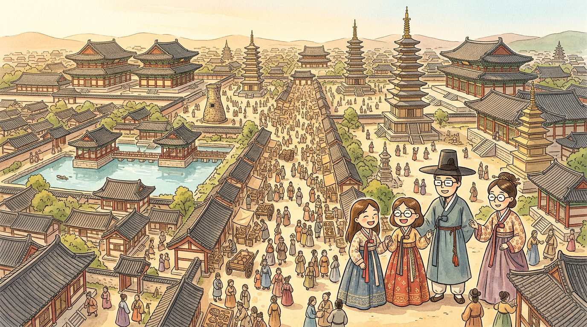
번영하는 8세기 경주(서라벌)의 모습
역사서에는 이런 기록이 남아 있어요: "서라벌의 집집마다 노래소리가 끊이지 않았고, 기와집이 즐비하여 초가가 하나도 없었다."
안압지(월지)에서는 화려한 연회가 열렸고, 수많은 불교 사원의 종소리가 도시 전체에 울려 퍼졌답니다. 경주에서 발견된 서역인 모양의 토우(흙 인형)는 먼 서역(중동, 중앙아시아)에서 온 상인들이 경주에 살았다는 증거예요.
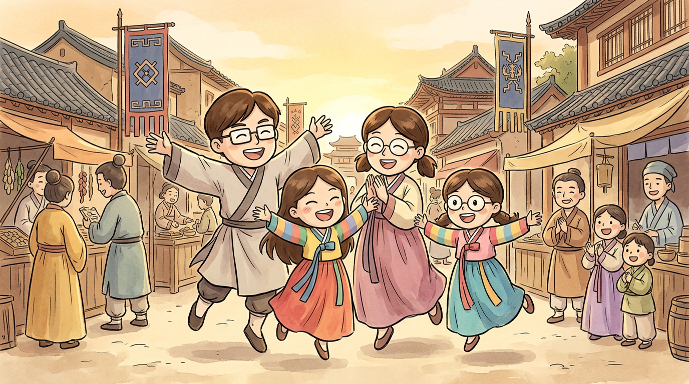
당나라 산둥반도에 있던 신라인 마을(신라방)
당나라의 산둥반도, 양쯔강 하류 등에는 신라방(新羅坊)이라 불리는 신라인 거주지가 여러 곳 있었어요. 이곳에서는:
- 신라방: 신라 상인, 유학생, 승려들이 모여 사는 마을
- 신라원(新羅院): 신라인이 세운 불교 사원
- 신라소(新羅所): 신라인의 행정을 담당하는 관청
이것은 마치 오늘날의 한인타운(코리아타운)과 같은 것이에요! 1,300년 전에도 신라인들은 세계 곳곳에서 활발하게 활동하고 있었답니다.
일본의 고대 수도 나라(奈良)에 있는 정창원(正倉院)에는 신라에서 보낸 물건들이 보관되어 있어요. 유리 그릇, 악기, 직물 등 1,300년 전의 국제 무역 증거랍니다! 또한 '나라'라는 이름 자체가 한국어 '나라(국가)'에서 왔다는 설도 있어요.
1,300년 전 신라인들도 외국에 나가 공부하고, 장사하고, 마을을 이루어 살았어요. 오늘날 세계 곳곳의 한인타운과 비교하면 어떤 공통점이 있을까요? 세계화는 현대에만 있는 현상이 아니랍니다!
1,300년 전에도 당나라에 '신라방(한인타운)'이 있었어요. 왜 사람들은 외국에 나가서도 같은 나라 사람들끼리 모여 살까?
낯선 곳에서 같은 말을 쓰고, 같은 음식을 먹고, 같은 문화를 나누는 사람들이 있으면 큰 위안이 돼요. 또한 정보를 나누고 서로 도울 수 있어서 생존에도 유리해요. 신라방에는 절(신라원)과 관청(신라소)까지 있어서 종교, 행정, 경제 활동을 함께 했어요. 이것은 오늘날의 차이나타운, 코리아타운과 같은 원리예요. 인간은 어디에 가든 '소속감'이 필요한 존재랍니다.
경주에서 서역인(중동/중앙아시아) 모양의 토우가 발견되었어요. 1,300년 전의 '세계화'와 오늘날의 '세계화'는 무엇이 같고 무엇이 다를까?
같은 점은 사람, 물건, 문화가 국경을 넘어 이동한다는 것이에요. 비단길(실크로드)과 바닷길을 통해 서역의 유리, 인도의 향신료, 중국의 비단이 신라까지 왔어요. 다른 점은 '속도'와 '규모'예요. 옛날에는 교역품이 도착하는 데 수개월이 걸렸고, 소수의 상인만 이동했어요. 오늘날은 비행기로 하루, 인터넷으로 1초면 세계와 연결돼요. 하지만 핵심은 같아요 - 교류를 통해 서로 배우고 발전한다는 것이요.
통일신라의 수도 경주에 인구 100만 명이 살았다면, 그 도시에는 어떤 문제가 있었을까?
100만 명이 사는 도시에는 식량 공급, 쓰레기 처리, 물 공급, 치안 등 많은 문제가 생겨요. 현대 도시에서도 이런 문제를 겪는데, 1,300년 전이면 더 심했겠죠? 실제로 경주의 하수 시설이나 도로 유적이 발견되는 것을 보면, 당시에도 이런 문제를 해결하려 노력했어요. 또한 수도에 사람이 너무 몰리면 지방이 비게 되고, 이것이 나중에 지방 호족의 성장과 연결될 수 있어요.
찬란했던 통일신라도 영원할 수는 없었어요. 나라 안의 문제들이 쌓이고 쌓여, 결국 천년 왕국이 무너지게 됩니다.
통일신라가 무너진 이유는 하나가 아니라 여러 가지가 함께 작용했어요.
첫째, 끊임없는 왕위 다툼이에요. 8세기 후반부터 진골 귀족들이 서로 왕이 되려고 피비린내 나는 싸움을 벌였어요. 무려 150년 동안 20명의 왕이 바뀌었답니다!
둘째, 골품제의 모순이에요. 최치원처럼 뛰어난 인재들이 신분 때문에 능력을 펼치지 못하니, 사회 전체의 불만이 커져갔어요.
셋째, 지방 호족의 성장이에요. 중앙 정부가 힘을 잃자, 지방의 유력자들이 자기 지역을 독자적으로 다스리기 시작했어요.
넷째, 백성의 고통이에요. 귀족들의 사치와 전쟁 비용 때문에 세금이 늘어났고, 농민들의 삶은 점점 힘들어졌답니다.
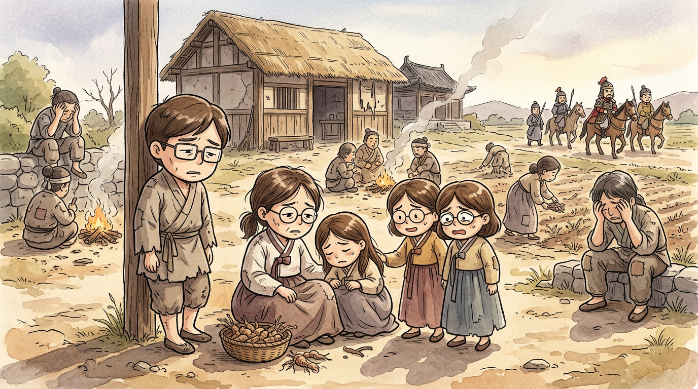
혼란에 빠진 신라 궁궐과 고통받는 백성들
진성여왕(재위 887~897) 때, 상황은 최악이 되었어요. 889년에는 전국에서 세금을 보내지 않는 사태가 벌어졌어요. 각지에서 농민들이 들고 일어났고, 최치원이 시무 10조를 올려 개혁을 촉구했지만, 이미 나라를 바로잡기에는 너무 늦은 상태였답니다.
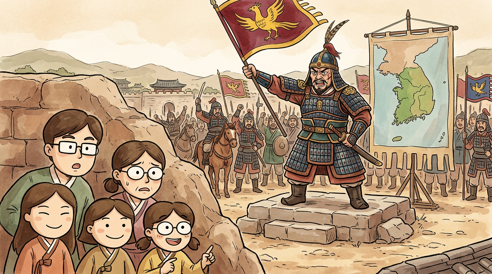
전주에서 후백제를 건국하는 견훤
견훤은 상주(지금의 경북) 출신의 군인이었어요. 견훤은 이렇게 선언했어요.
"신라가 당나라를 끌어들여 백제를 멸망시킨 것에 대한 원한을 갚겠다!"
900년, 견훤은 전주(완산주)에 도읍을 정하고 후백제를 건국했어요. 강한 군사력으로 한때 가장 넓은 영토를 차지했답니다.
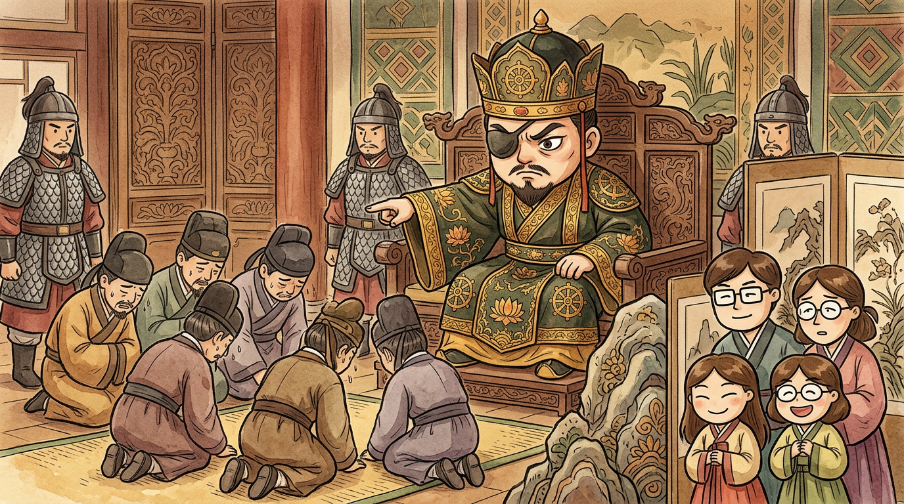
공포정치를 펼치는 궁예
궁예는 신라 왕족의 후손이라 전해지지만 확실하지 않아요. 처음에는 뛰어난 지도자였어요. 901년 태봉(후고구려)을 세우고 철원에 도읍을 정했답니다.
하지만 점점 의심이 많아지고, 스스로를 미륵불(부처)이라 선언했어요. "관심법(마음을 읽는 능력)"이 있다며 신하들의 마음을 꿰뚫어 본다고 주장했고, 충성스러운 신하들까지 마구 죽이는 공포정치를 펼쳤답니다.
호족(豪族): 지방에서 군사력과 경제력을 가진 유력한 가문
관심법(觀心法): 다른 사람의 마음을 꿰뚫어 보는 능력이라고 궁예가 주장한 것. 실제로는 신하들을 겁주기 위한 수단이었어요.
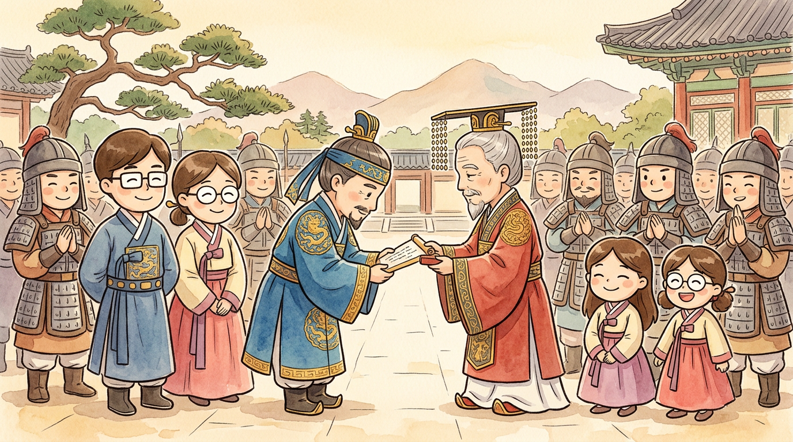
신라 경순왕의 항복을 예의 바르게 받아들이는 왕건
왕건은 개성 출신의 호족으로, 궁예의 부하였어요. 궁예의 폭정에 견디다 못한 신하들이 918년 반란을 일으켜 왕건을 왕으로 추대했답니다.
왕건은 나라 이름을 고려(高麗)라 정했어요. '고구려를 계승한다'는 뜻이에요. 왕건의 리더십은 견훤, 궁예와는 완전히 달랐어요.
- 항복한 적들을 죽이지 않고 포용했어요
- 지방 호족들의 딸과 결혼하여 연대를 맺었어요
- 백성들에게 세금을 줄여주었어요
935년, 견훤의 아들들이 아버지를 감금하고 권력을 빼앗는 사건이 벌어졌어요. 분노한 견훤은 적국인 고려에 망명했답니다 - 아이러니하게도 연개소문의 아들 연남생처럼요!
같은 해, 신라의 마지막 왕 경순왕도 더 이상 버틸 수 없어 자진해서 왕건에게 항복했어요. 천년 신라의 마지막이었습니다.
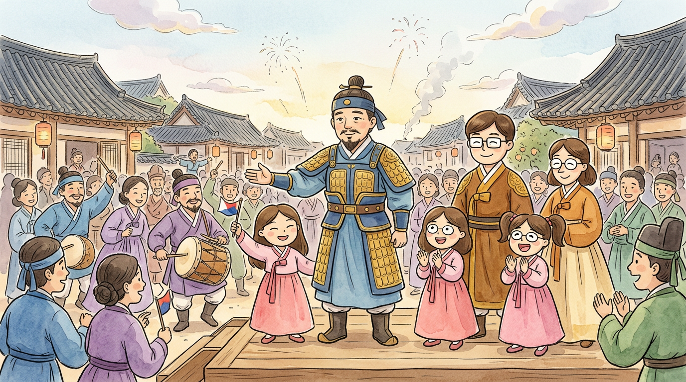
후삼국을 통일하고 고려 시대를 연 왕건
936년, 왕건이 후백제를 정벌하여 후삼국을 통일했어요. 이로써 고려 시대가 시작됩니다!
견훤, 궁예, 왕건 세 사람 중 왕건이 최종 승리한 이유는 무엇일까요? 힘으로 누르는 리더와 마음을 얻는 리더 중, 어떤 리더가 더 오래 사랑받을까요?
신라, 후백제, 후고구려(태봉)가 다시 셋으로 나뉘다
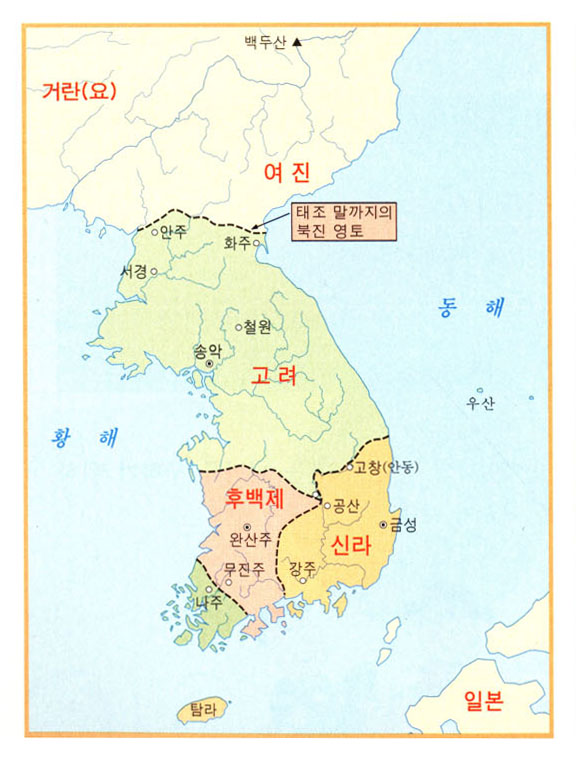
후삼국시대 (출처: Wikimedia Commons)
왕건은 경순왕에게 높은 작위와 경주 지역을 다스리는 권한을 주었어요. 그리고 경순왕의 성씨인 '김(金)'씨 경주 김씨가 지금까지 이어지고 있답니다! 또한 왕건은 견훤에게도 높은 지위를 주었어요. 적까지 포용하는 왕건의 리더십이 정말 대단하죠?
150년간 20명의 왕이 바뀌었어요. '권력을 나누는 규칙(제도)'이 없으면 왜 이런 일이 벌어질까?
왕이 되면 모든 것을 가질 수 있는데, 누가 왕이 될지 명확한 규칙이 없으면 '힘으로' 정하게 돼요. 오늘날 민주주의 국가에서는 선거라는 규칙으로 지도자를 정하지만, 신라에서는 진골 귀족 중 가장 힘센 사람이 왕이 되었어요. 이것은 끝없는 피의 다툼을 불렀죠. 이로부터 배울 수 있는 것은 '공정한 규칙'과 '평화적 정권 교체' 시스템의 중요성이에요. 규칙이 없으면 힘이 곧 정의가 되어버려요.
궁예는 처음에는 좋은 지도자였는데 나중에 공포정치를 했어요. '권력'은 왜 사람을 변하게 만들까?
'절대적 권력은 절대적으로 부패한다'는 유명한 말이 있어요. 처음에는 좋은 마음으로 시작해도, 아무도 '안 된다'고 말하지 못하면 자신이 항상 옳다고 믿게 돼요. 궁예가 '관심법'을 주장한 것은 반대 의견 자체를 없애려 한 거예요. 이것을 막으려면 권력을 견제하는 장치(언론, 법원, 의회)가 필요해요. 현대 민주주의의 '삼권분립'이 바로 이 교훈에서 나온 거랍니다.
견훤, 궁예, 왕건 세 사람의 리더십은 매우 달랐어요. 여러분이 생각하는 '좋은 리더'는 어떤 사람일까?
견훤은 '힘(무력)'으로, 궁예는 '두려움(공포)'으로, 왕건은 '마음(포용)'으로 사람들을 이끌었어요. 단기적으로는 힘과 공포가 빠르게 효과를 낼 수 있지만, 오래가지 못해요. 견훤의 부하와 아들들이 배신했고, 궁예의 신하들이 반란을 일으켰잖아요. 반면 왕건은 적까지 포용하여 진심으로 따르는 사람들을 만들었어요. 좋은 리더는 '나를 따르라'가 아니라 '함께 가자'고 말하는 사람이에요. 존경은 두려움보다 강하답니다.
| 항목 | 견훤 (후백제) | 궁예 (태봉) | 왕건 (고려) |
|---|---|---|---|
| 출신 | 상주 농민/군인 출신 | 신라 왕족? (불확실) | 개성 호족 |
| 건국 연도 | 900년 | 901년 | 918년 |
| 도읍 | 전주 | 철원 | 개성(개경) |
| 계승 의식 | 백제의 원한을 갚겠다 | 고구려를 이어간다 | 고구려를 계승한다 |
| 리더십 | 강한 군사력, 정복 | 처음엔 좋았으나 공포정치 | 포용, 관용, 연대 |
| 몰락 원인 | 아들들의 반란 | 부하들의 반란 | - |
| 최후 | 고려에 망명 | 백성에게 쫓겨남 | 후삼국 통일 (936) |
| 인물 | 분야 | 대표 업적 | 특징 |
|---|---|---|---|
| 문무왕 | 정치/군사 | 삼국통일 완성, 나당전쟁 승리 | 바다의 용이 되겠다는 유언 |
| 신문왕 | 정치/개혁 | 9주 5소경, 녹읍 폐지, 국학 설립 | 아버지의 뜻을 이어 나라를 다진 왕 |
| 원효 | 불교/철학 | 일체유심조, 화쟁 사상 | 백성에게 불교를 전한 파격적 스님 |
| 의상 | 불교 | 화엄종 창시, 부석사 건립 | 선묘의 용 전설 |
| 혜초 | 여행/기록 | 왕오천축국전 (세계 여행기) | 마르코 폴로보다 500년 앞선 여행가 |
| 설총 | 학문/문자 | 이두 체계화, 유학 경전 해석 | 원효의 아들, 화왕계 우화 |
| 최치원 | 학문/문학 | 토황소격문, 시무 10조 | 6두품의 한계를 보여주는 비운의 천재 |
| 장보고 | 해상/무역 | 청해진 설치, 동아시아 해상 무역 장악 | 해상왕, 비극적 최후 |
| 김대성 | 건축/문화 | 불국사, 석굴암 창건 | 전생과 현생의 부모를 위한 효심 |